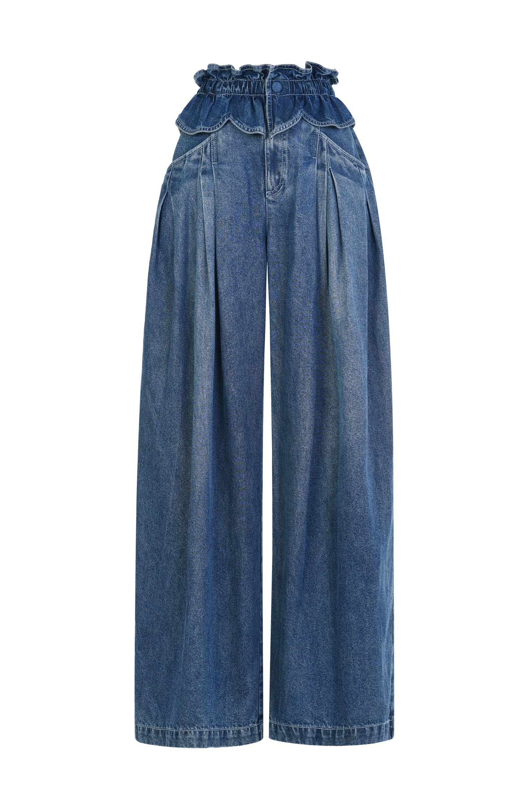

当季色彩
PASTEL · ROSE · NEW MOOD
03 · SEASONAL EDIT
Seasonal Wardrobe
根据每季趋势持续开发，以新的色彩、廓形与搭配语法回应当下，同时保留拉飞姆精致而鲜明的女性气质。
趋势衣橱负责捕捉当季色彩和廓形，却不会追逐短暂符号。它把趋势转译为属于 Le Fame 的穿着提案。
PASTEL · ROSE · NEW MOOD

PROPORTION · MOVEMENT

DENIM · DETAIL · LAYERING
浏览 2026 秋季 Trend Capsule 与代表造型。
查看秋季系列 咨询门店